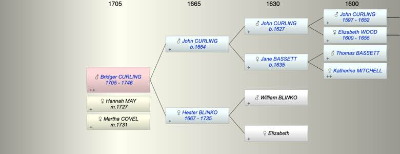

| [Index] |
| Bridger CURLING (1705 - 1746) |
|  |
| b. 1705 |
| m. (1) 11 Mar 1727 Hannah MAY at St Mary Brendin, Canterbury |
| m. (2) 24 Oct 1731 Martha COVEL at St Peters Thanet |
| d. 1746 at St Laurence aged 41 |
| Parents: |
| John CURLING (1664 - ) |
| Hester BLINKO (1667 - 1735) |
| Siblings (5): |
| Elizabeth CURLING (1691 - ) |
| John CURLING (1694 - ) |
| Jane CURLING (1696 - 1764) |
| William CURLING (1698 - 1728) |
| Thomas CURLING (1702 - 1733) |
| Events in Bridger CURLING (1705 - 1746)'s life | |||||
| Date | Age | Event | Place | Notes | Src |
| 1705 | Bridger CURLING was born | Note 1 | |||
| 11 Mar 1727 | 22 | Married Hannah MAY | St Mary Brendin, Canterbury | Note 2 | |
| 24 Oct 1731 | 26 | Married Martha COVEL | St Peters Thanet | Note 3 | |
| 12 Sep 1735 | 30 | Death of mother Hester BLINKO (aged 68) | Note 4 | ||
| 1746 | 41 | Bridger CURLING died | St Laurence | Note 5 | |
| Death of wife Hannah MAY | Note 6 | ||||
| Personal Notes: |
|
Curling, Bridger , son of John deceased, of Ramsgate, grocer app. to Richard Jenkins of Cant. 1727.
LAC R/U1196/T3 (262 – or possibly 263) p/copy (x2) of Bond and Mortgage between Bridger Curling and George Curling 27th June 1727 This is the document of which Laurie Bridger sent me hard copy. He is refered to in the will of Thomas Curling of Highate Mar 1733 - "my brother Bridger" and "his sister Sarah Curling and her children" Short title: Curling v May. Document type: Bill and answer. Plaintiffs: Bridger Curling, grocer of Ramsgate, Thanet, Kent (administrator of Hannah Curling his wife, deceased). Defendants: Ann May and James May. Date of bill (or first document): 1733 |
| Created on a Mac™ using iFamily for Mac™ on 8 Oct 2023 |